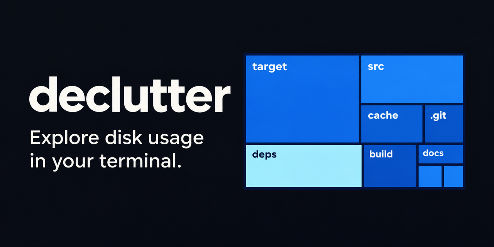
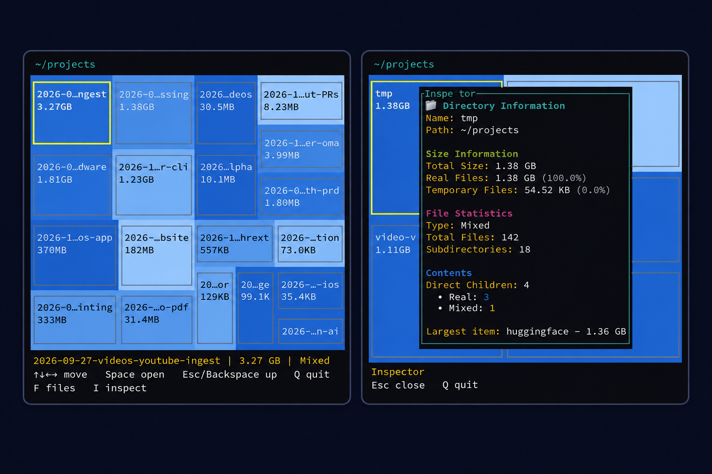
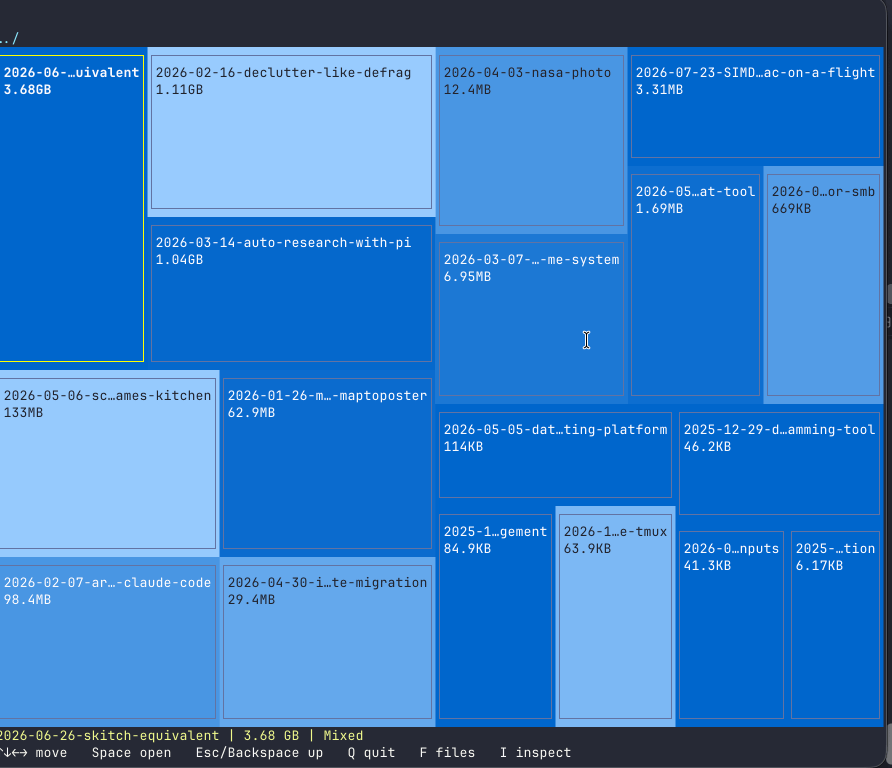

Spot large folders
Larger blocks represent folders that take up more space. Color distinguishes temporary and build files from source files.
macOS · Linux
Explore disk usage in your terminal. Declutter turns folders into a treemap so you can spot large directories and build artifacts at a glance.

Larger blocks represent folders that take up more space. Color distinguishes temporary and build files from source files.
Move with the arrow keys, press Enter to open a folder, or press f to list its files by size.
Press i for folder statistics. Declutter scans in read-only mode.


On macOS or Linux, you’ll need Git, Rust, Cargo, a native linker, and Make. Open the app with a directory path to start scanning.
git clone https://github.com/ssojoodi/declutter.git
cd declutter
make install
~/.local/bin/declutter "$HOME"